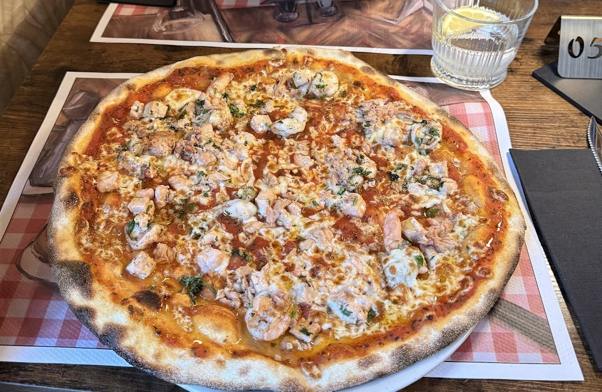
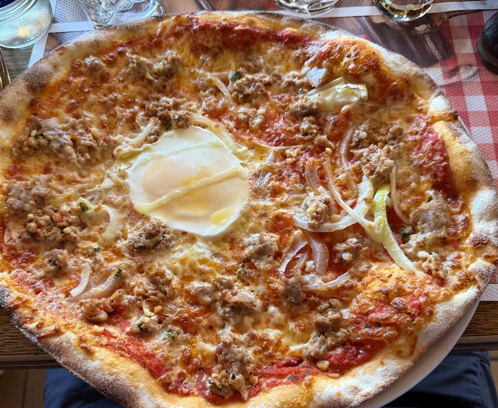
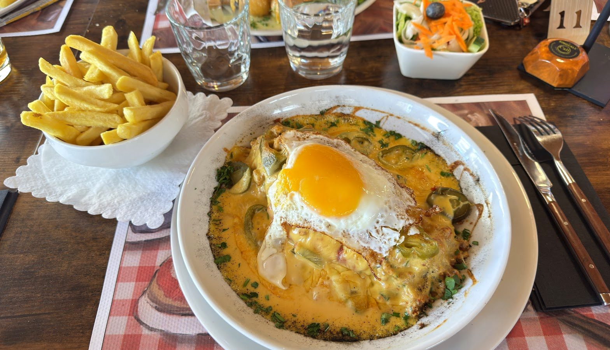
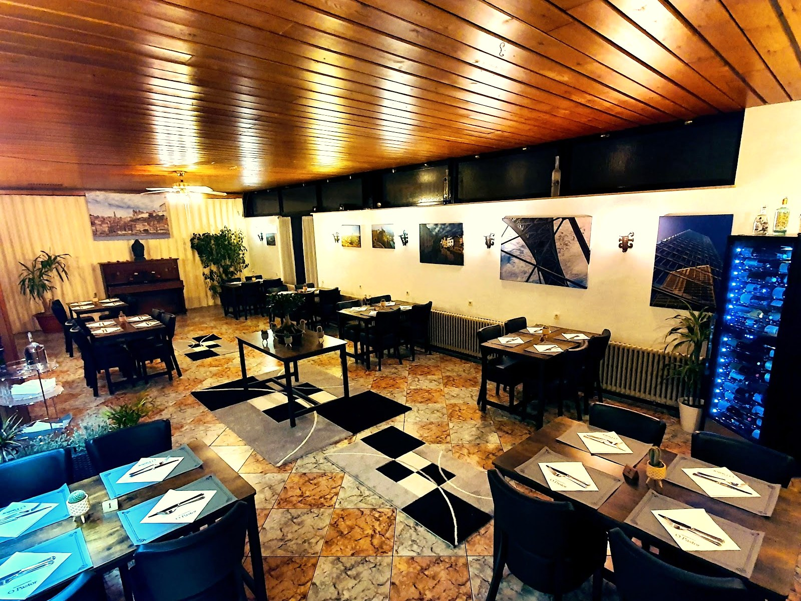

Café Restaurant PizzeriaO Pastor
En face de l'église de Consdorf, dans le Mullerthal : des pizzas, des pâtes et les suggestions de la semaine, au retour de la balade.
Déi ganz Ekipp freet sech op Iech !Toute l'équipe se réjouit de vous accueillir !

Vingt et une pizzas,
et la Pastor.
De la Margherita à la Pastor, la pizza de la maison : saumon, thon et scampis, sur tomate et mozzarella.
Toutes les pizzas ↓
Les suggestions de la semaine
Notre dernier tableau. Les suggestions changent régulièrement : il y a toujours quelque chose de nouveau à goûter.
Suggestions de cette semaine
Nos moules sont servies avec des frites

Pour réserver une table ou commander à emporter, un coup de fil suffit.
Sous la voûte
en bois.
Un plafond en lambris de bois, un damier noir et blanc au sol, une cave à vin vitrée et des photos aux murs.
Le café à gauche, la salle de restaurant à droite. Et devant, en haut des marches, la terrasse face à l'église.

La carte
Pizzas, pâtes, burgers et salades, avec leurs garnitures.
Les pizzas
Sur tomate et mozzarella
Les pâtes
Les burgers
Avec frites, salade, tomate, oignons et sauce maison
Hamburger, chickenburger, veggieburger, fishburger
Les salades
Salade verte, oignons, carottes, concombres, tomate
Petite salade mixte, salade de scampis, salade de poulet pané, salade de thon
Nous trouver
L-6210 Consdorf
Fermé le lundi et le mardi